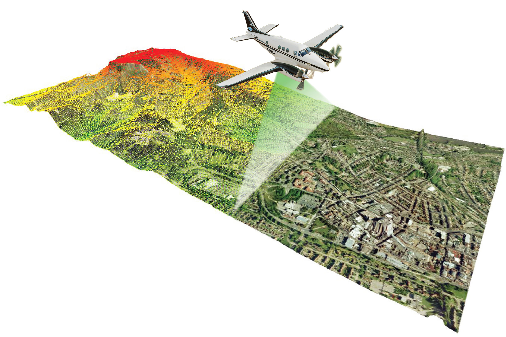

Deep Learning for Hydrographic Semantic
Segmentation using Point Cloud Data
By Ovi Paul
Course Instructor - Dr. Shuhab D. Khan

Abstract
Bathymetric lidar data analysis often necessitates the laborious and manual identification and labeling of water bodies, such as rivers, seas, and lakes,
owing to the lack of effective automated methods. This project strives to make advancement to this process by harnessing the power of deep learning.
The deep learning model is meticulously trained using lidar data collected from the rivers of Montana. This dataset provides critical semantic segmentation
for various aspects of river features, upon which the training of a sophisticated model known as PointCNN is conducted. This model exhibits the capacity
to conduct river semantic segmentation across two distinct levels: the river's surface and the river's bottom. By achieving this, we enable the
automatic, precise, and scientifically robust identification and classification of river morphology and topography, facilitating substantial
advancements in hydrographic surveying and mapping processes.
The Riverbed class showcased excellent performance, characterized by a high IoU of 0.9348 and an Accuracy of 0.9492. The model demonstrated impressive Precision and Recall values, contributing to a high F1 score and Kappa coefficient, with minimal Commission and Omission Errors.
The model excelled in classifying the River Surface, achieving a remarkable IoU of 0.9731 and an Accuracy of 0.9794. The near-perfect Precision and Recall values, coupled with high F1 score and Kappa coefficient, highlighted the model's proficiency in precisely classifying the river surface, with minimal Commission and Omission Errors.
Introduction
LiDAR (Light Detection and Ranging) is a remote sensing technology that measures distances by illuminating a target with laser light and analyzing the reflected light. LiDAR systems generate highly accurate three-dimensional point clouds, capturing the elevation of the Earth's surface and objects on it.
Bathymetric LiDAR specifically focuses on mapping underwater topography, including the depth of water bodies. This technology enables the collection of elevation data both above and below the water surface, providing a comprehensive view of the terrain beneath the water.
Bathymetric LiDAR is crucial for various applications, including coastal zone management, environmental monitoring, and navigation. Understanding underwater topography aids in hazard assessment, habitat mapping, and ensuring safe navigation for maritime activities.
Bathymetric LiDAR data acquisition encounters inherent challenges related to coordinate shifts, primarily induced by the interaction of laser pulses with the water surface. While the x and y coordinates may experience relatively minor shifts upon laser penetration into the water medium, the alteration in the z coordinate, representing elevation, is notably pronounced. This elevation shift arises due to the complex interplay of factors such as refraction, reflection, and dispersion of laser beams within the water column. The substantial impact of z coordinate shifts on the accuracy of elevation measurements is a critical consideration in bathymetric LiDAR applications. The necessity to correct these coordinate shifts, especially in the vertical dimension, underscores the significance of meticulous calibration and advanced processing techniques, forming a key motivation for the present study. Addressing these challenges is paramount for ensuring the reliability and precision of bathymetric LiDAR data, thereby enhancing the effectiveness of environmental and maritime analyses.
Identifying the water surface and bed from bathymetric LiDAR data poses challenges due to factors such as water turbidity, varying bottom compositions, and complex underwater features. Distinguishing between submerged objects, vegetation, and the actual water surface and bed requires advanced data processing techniques.
Despite the widespread use of LiDAR, the application of deep learning techniques for automated identification of water surfaces and beds from bathymetric LiDAR data has been limited. The complex nature of underwater environments, combined with the scarcity of annotated training data, has hindered the development of robust deep learning models for this purpose.
In this research, a pioneering approach has been undertaken to apply deep learning methodologies for the identification of water surfaces and beds in bathymetric LiDAR data. By leveraging convolutional neural networks (CNNs) and recurrent neural networks (RNNs), the study aims to overcome the challenges associated with traditional methods and enhance the accuracy and efficiency of underwater feature recognition. This research contributes to the advancement of automated underwater mapping techniques, offering a potential breakthrough in the utilization of bathymetric LiDAR data for environmental and maritime applications.
Data
Fig-1: Location of survey polygons, aircraft trajectories, and GNSS reference stations
The data collection involved two flights on August 8 and 9, 2022, utilizing a Robinson R44 aircraft equipped with a RIEGL VQ-840G LIDAR system (N74767) featuring a 532nm Green Laser and an
Integrated RGB Camera. Flight parameters included a flying height of 300–500 meters above ground level, a speed range of 40–60 knots, and a 50% overlap. The LIDAR system had a Pulse Repetition Rate
(PRR) of 50-100 kHz, a Field of View (FOV) of 28°, and used an elliptical scan pattern, while the camera had a 12-megapixel resolution and a 16mm focal length. The collected area covered 40 square
kilometers. Two GNSS reference stations, MTFV and SPTA215, provided control coordinates. Data processing involved calibration near Kalispell with a clover leaf pattern flight over sloping roofs,
roads, and paint markings. Classification included three classes for returns from the main water channel: Water Surface, Water Bottom, and Intermediate, with refraction correction for points
penetrating the water body. Ground classification utilized a morphological filter. Elevation models were generated using Kriging. The data's horizontal and vertical datums were NAD83(2011) epoch
2010.00 and NAVD88 (GEOID18), respectively, with UTM Zone 12N projection and units in meters.
Fig-2: PointCloud data used for the experiment
The ultimate dataset underwent a spatial clipping process, concentrating specifically on the Swan River area. This decision was motivated by the predominant representation of default and ground classes within the overall dataset, which were deemed superfluous for the primary study focus on the river region. The primary objective centered on the classification of the river surface and river bottom. Additionally, the default and ground classes, constituting the majority of the data, were deemed non-essential for the study objectives. A further consideration was the potential imbalance introduced by the extensive LIDAR data, which could adversely affect the class balance of the subsequent deep learning model. Recognizing the computational costs associated with protracted training times, this strategic spatial clipping aimed to streamline the dataset for efficient model training, minimizing computational expenses.
Methodology
Fig-3: X-Convolution of PointCNN
The X-Convolution in PointCNN represents a pivotal component of the methodology, contributing to the model's efficacy in processing point cloud data. PointCNN employs a novel approach by introducing the X-Convolution operator, which enables the extraction of local features from unordered point sets. Unlike traditional convolutional operations designed for regular grid structures, the X-Convolution is tailored to handle the irregular and unstructured nature of point clouds.
The X-Convolution operates by leveraging the inherent spatial relationships between points. It achieves this by introducing a set of learnable transformation matrices that dynamically adapt to the local geometric configuration of the point cloud. These transformation matrices are employed to reorient and align neighboring points, facilitating the extraction of meaningful local features.
During the X-Convolution process, each point is assigned a weight based on its spatial relationships with its neighbors. This weight, determined through a learnable function, captures the importance of each neighboring point in influencing the feature extraction process. Consequently, the X-Convolution allows the model to focus on relevant local structures within the point cloud, enabling it to capture intricate geometric details.
The X-Convolutional layers are instrumental in endowing PointCNN with the capability to effectively discern patterns and features within unstructured point clouds. This adaptability to irregular data structures is particularly advantageous for applications such as 3D object recognition and segmentation, where traditional convolutional operations may prove less effective due to the lack of grid-like organization in point cloud data.
Fig-4: Convolution Layers of PointCNN
In fig-4, N represents the number of representative points or centroids in the output. In the context of point cloud processing, representative points are often used to summarize or represent certain characteristics of the input point cloud.
C denotes the dimensionality of the features associated with each point. In the context of point clouds, this could refer to the number of channels or attributes associated with each point, such as color, intensity, normal vector components, etc.
K represents the number of neighboring points considered for each representative point. This is often used in methods that involve capturing local structures or context around each point. For example, K might indicate the number of nearest neighbors or a fixed-size local neighborhood around a representative point.
Dilation rate is a parameter used in convolutional operations, and X-Conv could refer to an extended or customized convolution operation. Dilation rate influences the spacing between the values in the convolutional kernel and can affect the receptive field of the operation.
Result
Fig-5: Loss graph of the training done in 30 epochs.
The presented data illustrates the performance metrics of a neural network model across multiple training epochs, with a focus on training and validation losses. The initial epoch demonstrates a relatively high training loss of 1.190107, suggesting the model's struggle to fit the training data. However, as the training progresses, the loss consistently decreases, reaching 0.189199 by the 29th epoch. This trend is mirrored in the validation loss, which declines from 1.084902 to 0.204779 over the same epochs. The convergence of training and validation losses indicates the model's ability to generalize well to unseen data. The decreasing losses imply improved model accuracy and effectiveness in capturing the underlying patterns of the training data. It's noteworthy that the model achieves a notably low validation loss, indicating robust generalization beyond the training set. This consistent improvement across epochs suggests successful model training, with the potential for reliable predictions on new, unseen data. Overall, the observed trends reflect a well-optimized neural network model with a capacity for accurate and generalizable predictions.
Fig-6: Test portion of the Swan River in Montana
In our testing, we're using a small piece of information, shown in a visual representation, to evaluate the performance of a computer program known as a deep learning model. This program learns from examples and makes predictions. The specific area under examination covers water regions, ground, and a default class, allowing us to see how well the model understands and predicts different aspects within these categories. The figure provides a visual summary of the results, helping us assess the model's effectiveness in recognizing and categorizing information in various environments.
Target LayersPredicted LayersFig-7: Target layers is the actual PointCloud data and the Predicted Layers are the one generated by the model. The mixed color image represents all the classes while white represents default, brown is ground, cyan bottom of the river and yellow surface of the river.
The first column in the figure corresponds to the classified semantic segmented classes, where second and third column represents a specific category assigned to the same data. The white class signifies the default category, while the ground class is associated with a brown color. The yellow class corresponds to the water surface, and the cyan class pertains to the bottom. The upper section designates the target class, representing the expected classification, while the lower sections denote the predicted classes generated by the deep learning model. This arrangement allows for a detailed examination of how well the model aligns with the target classifications, enabling an assessment of its accuracy in distinguishing and categorizing various features within the dataset.
Fig-8: On the left is the confusion matrix created from the whole data points and on the right is the created from the sampled points.
Despite efforts to emphasize the water region by clipping the data, an inherent imbalance persisted in the dataset, as revealed by the calculation of a confusion matrix using our test data. This imbalance in the point cloud data prompted the generation of a sampled dataset, where the sampled values for each class were derived from the lowest amount of data within that class. The resulting sampled confusion matrix was then utilized to assess the accuracy of classification and identify instances of misclassification. The rationale behind this sampling approach lies in its ability to address the challenges posed by imbalanced data. By selecting data from the class with the lowest representation, this strategy ensures a proportional distribution of minimal counts across all other classes, mitigating the impact of imbalances and normalizing the presence of the least common class throughout various categories. The superiority of the sampled confusion matrix lies in its capacity to provide a more equitable representation of each class, preventing undue influence from overrepresented classes and enhancing the model's ability to generalize across different categories. Moreover, by addressing imbalances, the sampled confusion matrix offers a more accurate reflection of the model's performance, particularly in scenarios where certain classes may have been overshadowed by more dominant ones in the original dataset. In essence, the sampled confusion matrix serves as a refined and unbiased evaluation tool, providing nuanced insights into the deep learning model's classification capabilities.
Fig-9: Normalized Confusion Matrix of the test data.
The normalized confusion matrix was constructed to elucidate the inter-class relationships on a scale, providing insights into the patterns of misclassifications. Notably, the ground class exhibited misclassifications with the default class, potentially attributable to the presence of rough terrain and inherent challenges in the dataset. Furthermore, the water bottom region displayed slight misclassifications with the ground, likely stemming from surface similarities. Interestingly, the river surface encountered misclassifications with itself, albeit at a lower frequency, warranting further investigation into the underlying causes. The matrix serves as a valuable tool for comprehending the nuanced dynamics of misclassifications among different classes, shedding light on specific areas that merit attention for model improvement.
Table-1: Performance Metrics of the test data
Class
IoU
Accuracy
Precision
Recall
F1
Kappa
Commission Error
Omission Error
Default
0.9138
0.9344
0.9276
0.984
0.955
0.8346
0.0724
0.016
Ground
0.8925
0.9138
0.9549
0.9318
0.9432
0.7642
0.0451
0.0682
Riverbed
0.9348
0.9492
0.9722
0.9605
0.9663
0.8628
0.0278
0.0395
River Surface
0.9731
0.9794
0.9964
0.9766
0.9864
0.9438
0.0036
0.0234
The presented table encapsulates a comprehensive evaluation of a deep learning model's performance across distinct classes, employing a suite of metrics to assess its classification accuracy. For the Default class, the model demonstrates robust performance, as indicated by a high Intersection over Union (IoU) of 0.9138, an Accuracy of 0.9344, and balanced Precision and Recall values. The F1 score, Kappa coefficient, Commission Error, and Omission Error collectively underscore the model's accurate classification with minimal errors.
Moving to the Ground class, the model exhibits a commendable IoU of 0.8925, signifying substantial overlap between predicted and true values. Balanced Precision and Recall contribute to an Accuracy of 0.9138, while the Kappa coefficient indicates good agreement. However, the Commission and Omission Errors reveal some misclassifications, particularly in omission.
The Riverbed class showcases excellent performance, characterized by a high IoU of 0.9348, an Accuracy of 0.9492, and impressive Precision and Recall values. Both the F1 score and Kappa coefficient affirm the model's strong overall performance, with minimal Commission and Omission Errors.
Finally, for the River Surface class, the model excels with a remarkable IoU of 0.9731, an Accuracy of 0.9794, and near-perfect Precision and Recall values. The F1 score and Kappa coefficient underscore the high quality of predictions, with minimal Commission and Omission Errors, indicating precise classification of the river surface. Collectively, these metrics offer a nuanced and detailed understanding of the model's proficiency in accurately classifying diverse classes, highlighting areas of strength and potential improvement.
Fig-10: 3D view of the test data.
Conclusion
Fig-11: Vertical view of predicted PointCloud data in Terrascan.
In conclusion, the deep learning model under evaluation has demonstrated commendable performance across multiple classes, showcasing its capability for accurate and nuanced classification. The Default class exhibits robust results, characterized by a high Intersection over Union (IoU), Accuracy, and a balanced Precision-Recall trade-off, indicative of accurate predictions and minimal errors. The Ground class, while maintaining a high IoU and Accuracy, reveals some challenges, particularly in terms of Omission Errors, emphasizing the need for further optimization, especially in mitigating misclassifications related to omission.
The Riverbed class stands out as a highlight, with exceptional IoU, Accuracy, and well-balanced Precision and Recall metrics, attesting to the model's proficiency in accurately identifying instances of riverbed. This class showcases minimal Commission and Omission Errors, affirming the model's reliability in this particular classification task.
Moreover, the River Surface class represents a pinnacle of success for the model, achieving outstanding IoU, Accuracy, and near-perfect Precision and Recall values. The model excels in delineating the river surface, as evidenced by the low Commission and Omission Errors, suggesting precise classification.
While the model demonstrates overall strong performance, it is essential to acknowledge specific areas, such as Omission Errors in the Ground class, that warrant attention for further refinement. This analysis provides valuable insights into the model's strengths and areas for improvement, paving the way for informed iterations and enhancements in future iterations. The comprehensive suite of metrics employed in this evaluation contributes to a nuanced understanding of the model's capabilities, fostering confidence in its applicability for accurate classification across diverse classes.
Future Work
From a data perspective, the ongoing evaluation of the model warrants testing in diverse geographical areas to gauge its performance across varied landscapes. The results obtained will inform the necessity of expanding the training dataset to enhance the model's adaptability to different terrains. On the algorithmic front, there is a need to investigate the impact of increasing the model's layers and parameters. Specifically, exploring the augmentation of PointCNN with additional layers and parameters is essential to ascertain whether improved performance can be achieved. Additionally, a comparative analysis involving other deep learning models will provide insights into their efficacy, thereby contributing to a more comprehensive understanding of the optimal architecture for the given classification task. This multifaceted examination aligns with the iterative nature of model development, aiming to refine both data and algorithmic components for enhanced performance and generalizability.


 Predicted Layers
Predicted Layers